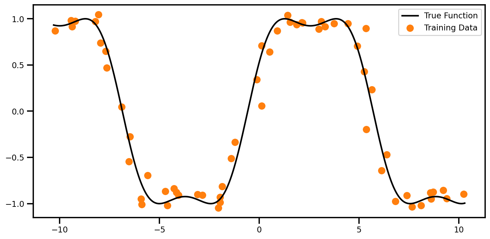
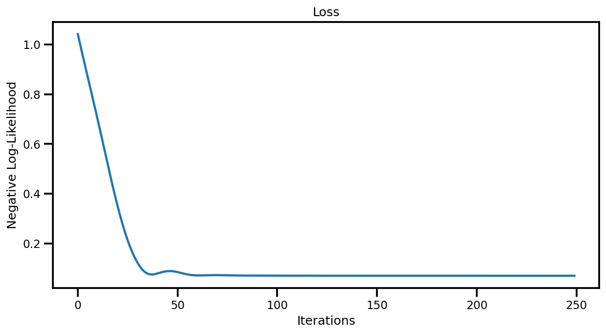
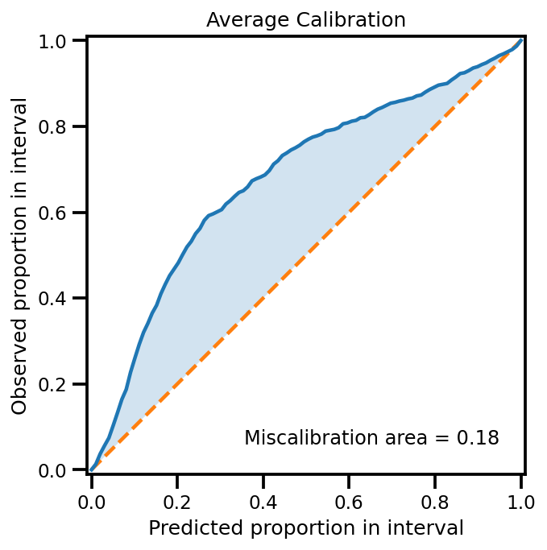
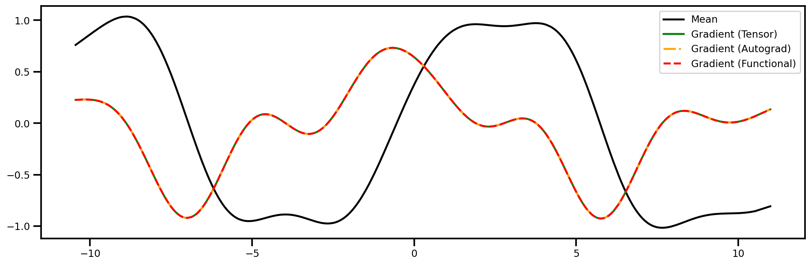
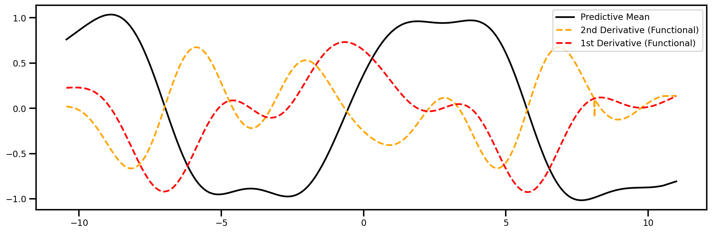
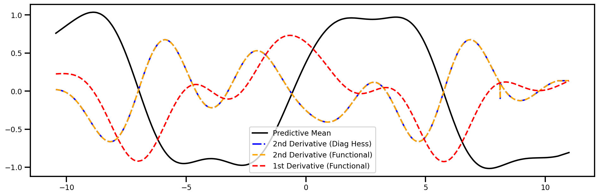
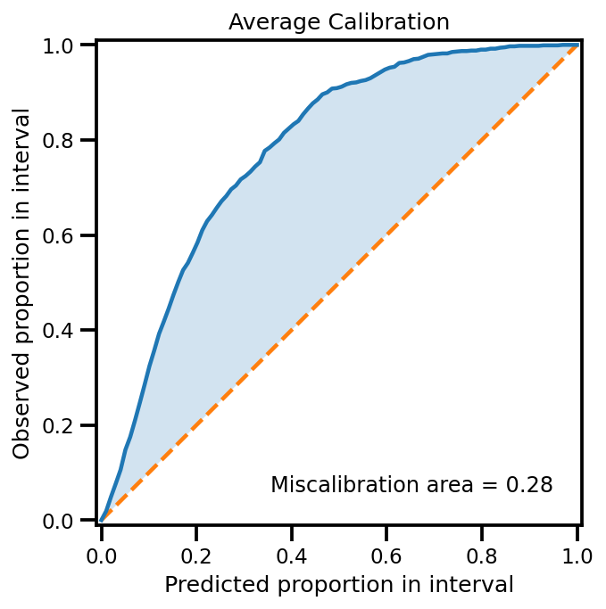
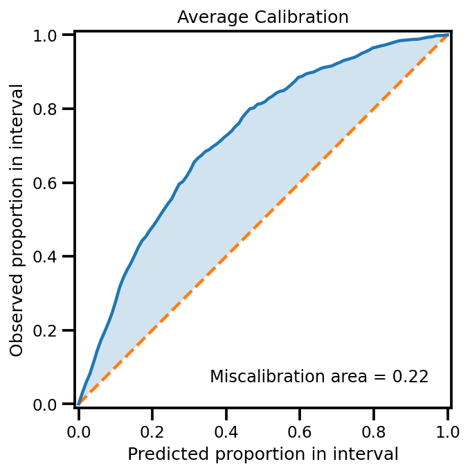

Gaussian Process Gradients with GPyTorch#
In this notebook, I will be looking at how one can compute the gradients of different
Sources
PyTorch Forum comment by Thomas V
PyTorch Issue comment & Gist Example by Adam Paszke
#@title Install Packages
try:
import gpytorch
except:
!pip install --upgrade pyro-ppl gpytorch pytorch-lightning tqdm wandb "git+https://github.com/uncertainty-toolbox/uncertainty-toolbox.git"
#@title Load Packages
# TYPE HINTS
from typing import Tuple, Optional, Dict, Callable, Union
# PyTorch Settings
import torch
# Pyro Settings
# GPyTorch Settings
import gpytorch
# PyTorch Lightning Settings
# NUMPY SETTINGS
import numpy as np
np.set_printoptions(precision=3, suppress=True)
# MATPLOTLIB Settings
import matplotlib as mpl
import matplotlib.pyplot as plt
%matplotlib inline
%config InlineBackend.figure_format = 'retina'
# SEABORN SETTINGS
import seaborn as sns
sns.set_context(context='talk',font_scale=0.7)
# sns.set(rc={'figure.figsize': (12, 9.)})
# sns.set_style("whitegrid")
# PANDAS SETTINGS
import pandas as pd
pd.set_option("display.max_rows", 120)
pd.set_option("display.max_columns", 120)
# LOGGING SETTINGS
import tqdm
import wandb
%load_ext autoreload
%autoreload 2
1D Datasets#
def regression_near_square(
n_train: int = 50,
n_test: int = 1_000,
x_noise: float = 0.3,
y_noise: float = 0.2,
seed: int = 123,
buffer: float = 0.1,
):
rng = np.random.RandomState(seed)
# function
f = lambda x: np.sin(1.0 * np.pi / 1.6 * np.cos(5 + 0.5 * x))
# input training data (clean)
xtrain = np.linspace(-10, 10, n_train).reshape(-1, 1)
ytrain = f(xtrain) + rng.randn(*xtrain.shape) * y_noise
xtrain_noise = xtrain + x_noise * rng.randn(*xtrain.shape)
# output testing data (noisy)
xtest = np.linspace(-10.0 - buffer, 10.0 + buffer, n_test)[:, None]
ytest = f(xtest)
xtest_noise = xtest + x_noise * rng.randn(*xtest.shape)
idx_sorted = np.argsort(xtest_noise, axis=0)
xtest_noise = xtest_noise[idx_sorted[:, 0]]
ytest_noise = ytest[idx_sorted[:, 0]]
return xtrain, xtrain_noise, ytrain, xtest, xtest_noise, ytest, ytest_noise
n_train = 60
n_test = 1_000
x_noise = 0.3
y_noise = 0.05
seed = 123
(
Xtrain,
Xtrain_noise,
ytrain,
xtest,
xtest_noise,
ytest,
ytest_noise,
) = regression_near_square(
n_train=n_train, n_test=n_test, x_noise=x_noise, y_noise=0.05, seed=123, buffer=0.3
)
x_stddev = np.array([x_noise])
fig, ax = plt.subplots(figsize=(10, 5))
ax.scatter(Xtrain_noise, ytrain, color="tab:orange", label="Training Data")
ax.plot(xtest, ytest, color="black", label="True Function")
ax.legend()
plt.tight_layout()
plt.show()

Data#
xtrain_tensor = torch.Tensor(Xtrain_noise)
ytrain_tensor = torch.Tensor(ytrain.squeeze())
xtest_tensor = torch.Tensor(xtest_noise)
ytest_tensor = torch.Tensor(ytest_noise)
if torch.cuda.is_available():
print("Cuda!")
xtrain_tensor, ytrain_tensor, xtest_tensor, ytest_tensor = xtrain_tensor.cuda(), ytrain_tensor.cuda(), xtest_tensor.cuda(), ytest_tensor.cuda()
Plots#
Predictions#
def plot_predictions(mu, lower, upper, noisy=True):
fig, ax = plt.subplots(figsize=(10, 5))
if noisy:
ax.scatter(xtest_noise, ytest_noise, marker="o", s=30, color="tab:orange", label="Noisy Test Data")
else:
ax.scatter(xtest, ytest, marker="o", s=30, color="tab:orange", label="Noisy Test Data")
ax.plot(xtest, ytest, color="black", linestyle="-", label="True Function")
ax.plot(
xtest,
mu.ravel(),
color="Blue",
linestyle="--",
linewidth=3,
label="Predictive Mean",
)
ax.fill_between(
xtest.ravel(),
lower,
upper,
alpha=0.4,
color="tab:blue",
label=f" 95% Confidence Interval",
)
ax.plot(xtest, lower, linestyle="--", color="tab:blue")
ax.plot(xtest, upper, linestyle="--", color="tab:blue")
plt.tight_layout()
plt.legend(fontsize=12)
return fig, ax
Calibrations#
from uncertainty_toolbox import viz as utviz
def plot_all_uncertainty(
y_pred, y_std, y_true,
):
utviz.plot_calibration(y_pred=y_pred.ravel(), y_std=y_std.ravel(), y_true=y_true.ravel())
return None
Model#
# We will use the simplest form of GP model, exact inference
class ExactGPModel(gpytorch.models.ExactGP):
def __init__(self, train_x, train_y, likelihood):
super(ExactGPModel, self).__init__(train_x, train_y, likelihood)
self.mean_module = gpytorch.means.ConstantMean()
self.covar_module = gpytorch.kernels.ScaleKernel(gpytorch.kernels.RQKernel())
def forward(self, x):
mean_x = self.mean_module(x)
covar_x = self.covar_module(x)
return gpytorch.distributions.MultivariateNormal(mean_x, covar_x)
Training#
# initialize likelihood and model
likelihood = gpytorch.likelihoods.GaussianLikelihood()
model = ExactGPModel(xtrain_tensor, ytrain_tensor, likelihood)
# Find optimal model hyperparameters
model.train()
likelihood.train()
if torch.cuda.is_available():
model.cuda()
likelihood.cuda()
# Use the adam optimizer
optimizer = torch.optim.Adam([
{'params': model.parameters()}, # Includes GaussianLikelihood parameters
], lr=0.1)
# "Loss" for GPs - the marginal log likelihood
mll = gpytorch.mlls.ExactMarginalLogLikelihood(likelihood, model)
losses = []
training_iter = 250
scheduler = torch.optim.lr_scheduler.MultiStepLR(optimizer, milestones=[0.5 * training_iter], gamma=0.1)
with tqdm.trange(training_iter) as pbar:
for i in pbar:
# Zero gradients from previous iteration
optimizer.zero_grad()
# Output from model
output = model(xtrain_tensor)
# Calc loss and backprop gradients
loss = -mll(output, ytrain_tensor)
losses.append(loss.item())
pbar.set_postfix(loss=loss.item())
loss.backward()
optimizer.step()
scheduler.step()
100%|██████████| 250/250 [00:01<00:00, 127.29it/s, loss=0.0698]
Losses#
fig, ax = plt.subplots(figsize=(10, 5))
ax.plot(losses)
ax.set(title="Loss", xlabel="Iterations", ylabel="Negative Log-Likelihood")
plt.show()

Predictions#
# Get into evaluation (predictive posterior) mode
model.eval()
likelihood.eval()
# Test points are regularly spaced along [0,1]
# Make predictions by feeding model through likelihood
with torch.no_grad(), gpytorch.settings.fast_pred_var():
observed_pred = likelihood(model(xtest_tensor))
# get mean
if torch.cuda.is_available():
mu = observed_pred.mean.cpu().numpy()
# get variance
var = observed_pred.variance.cpu().numpy()
std = np.sqrt(var.squeeze())
# Get upper and lower confidence bounds
lower, upper = observed_pred.confidence_region()
lower, upper = lower.cpu().numpy(), upper.cpu().numpy()
else:
mu = observed_pred.mean.detach().numpy()
# get variance
var = observed_pred.variance.detach().numpy()
std = np.sqrt(var.squeeze())
# Get upper and lower confidence bounds
lower, upper = observed_pred.confidence_region()
lower, upper = lower.detach().numpy(), upper.detach().numpy()
plot_predictions(mu, lower, upper)
(<Figure size 720x360 with 1 Axes>,
<matplotlib.axes._subplots.AxesSubplot at 0x7fa2f88235d0>)
plot_all_uncertainty(mu, std, ytest_noise)

Gradients w.r.t. Inputs (1st Derivative)#
Tensors#
# Get into evaluation (predictive posterior) mode
model.eval()
likelihood.eval()
X = torch.autograd.Variable(torch.Tensor(xtest_noise), requires_grad=True)
observed_pred = likelihood(model(X))
y = observed_pred.mean.sum()
y.backward()
dydtest_x = X.grad
AutoGrad#
# Get into evaluation (predictive posterior) mode
model.eval()
likelihood.eval()
X = torch.autograd.Variable(torch.Tensor(xtest_noise), requires_grad=True)
observed_pred = likelihood(model(X))
dydtest_x_ag = torch.autograd.grad(observed_pred.mean.sum(), X)[0]
Functional#
# Get into evaluation (predictive posterior) mode
model.eval()
likelihood.eval()
X = torch.autograd.Variable(torch.Tensor(xtest_noise), requires_grad=True)
def f(X):
return likelihood(model(X)).mean.sum()
dydtest_x_f = torch.autograd.functional.jacobian(f, X)
Plot#
fig, ax = plt.subplots(figsize=(16,5))
ax.plot(xtest_tensor.detach().numpy(), mu, color="black", label="Mean")
ax.plot(xtest_tensor.detach().numpy(), dydtest_x.detach().numpy(), 'green', label="Gradient (Tensor)")
ax.plot(xtest_tensor.detach().numpy(), dydtest_x_ag.detach().numpy(), 'orange', linestyle="-.", label="Gradient (Autograd)")
ax.plot(xtest_tensor.detach().numpy(), dydtest_x_f.detach().numpy(), 'red', linestyle="--", label="Gradient (Functional)")
plt.legend()
plt.show()

Gradient (2nd Order) wrt Inputs#
# Get into evaluation (predictive posterior) mode
model.eval()
likelihood.eval()
X = torch.autograd.Variable(torch.Tensor(xtest_noise), requires_grad=True)
def mean_f(X):
return likelihood(model(X)).mean.sum()
def var_f(X):
return likelihood(model(X)).var.sum()
def mean_df(X):
return torch.autograd.functional.jacobian(mean_f, X, create_graph=True).sum()
def var_df(X):
return torch.autograd.functional.jacobian(var_f, X, create_graph=True).sum()
dydtest_x_f = torch.autograd.functional.jacobian(mean_f, X)
dy2dtest_x2_f = torch.autograd.functional.jacobian(mean_df, X)
fig, ax = plt.subplots(figsize=(16,5))
ax.plot(xtest_tensor.detach().numpy(), mu, color="black", label="Predictive Mean")
ax.plot(xtest_tensor.detach().numpy(), dy2dtest_x2_f.detach().numpy(), 'orange', linestyle="--", label="2nd Derivative (Functional)")
ax.plot(xtest_tensor.detach().numpy(), dydtest_x_f.detach().numpy(), 'red', linestyle="--", label="1st Derivative (Functional)")
plt.legend()
plt.show()

Hessian (wrt Inputs)#
# Get into evaluation (predictive posterior) mode
model.eval()
likelihood.eval()
X = torch.autograd.Variable(torch.Tensor(xtest_noise), requires_grad=True)
hessian_x_f = torch.autograd.functional.hessian(mean_f, X)
Easy check is to see if the diagonal elements are the same as the 2nd Order derivative (i.e. Laplacian)
Permute the dimensions
Take the diagonal elements
hessian_x_f = hessian_x_f.permute(0, 2, 1, 3)
laplaced_x_f = hessian_x_f.diagonal().T
fig, ax = plt.subplots(figsize=(16,5))
ax.plot(xtest_tensor.detach().numpy(), mu, color="black", label="Predictive Mean")
ax.plot(xtest_tensor.detach().numpy(), laplaced_x_f.detach().numpy()[..., 0], 'blue', linestyle="-.", label="2nd Derivative (Diag Hess)")
ax.plot(xtest_tensor.detach().numpy(), dy2dtest_x2_f.detach().numpy(), 'orange', linestyle="--", label="2nd Derivative (Functional)")
ax.plot(xtest_tensor.detach().numpy(), dydtest_x_f.detach().numpy(), 'red', linestyle="--", label="1st Derivative (Functional)")
plt.legend()
plt.show()

Uncertain Inputs#
A quick demo showing how we can use the Taylor Series Expansion to propagate the error within our inputs.
1st Order#
\[\begin{split}
\begin{aligned}
\tilde{\mathbf{\mu}}_\text{LinGP}(\mathbf{x_*}) &= \mathbf{\mu}_\text{GP}(\mathbf{\mu}_\mathbf{x_*}) \\
\tilde{\mathbf{\sigma}}^2_\text{LinGP} (\mathbf{x_*}) &=
\mathbf{\sigma}^2_\text{GP}(\mathbf{\mu}_\mathbf{x_*}) +
\underbrace{\frac{\partial \mathbf{\mu}_\text{GP}(\mathbf{\mu}_\mathbf{x_*})}{\partial \mathbf{x_*}}^\top
\mathbf{\Sigma}_\mathbf{x_*}
\frac{\partial \mathbf{\mu}_\text{GP}(\mathbf{\mu}_\mathbf{x_*})}{\partial \mathbf{x_*}}}_\text{1st Order}
\end{aligned}
\end{split}\]
# Get into evaluation (predictive posterior) mode
model.eval()
likelihood.eval()
X = torch.autograd.Variable(torch.Tensor(xtest_noise), requires_grad=True)
def mean_f(X):
return likelihood(model(X)).mean.sum()
def mean_df(X):
return torch.autograd.functional.jacobian(mean_f, X)
def hessian_mean_f(X):
return None
hessian_x_f = torch.autograd.functional.hessian(mean_f, X)
mu_jac = mean_df(X)
input_cov = np.array([x_noise**2]).reshape(-1,1)
input_cov = torch.Tensor(input_cov)
var_corr = mu_jac.matmul(input_cov).matmul(mu_jac.t()).diagonal()
std_corr = var_corr.sqrt().detach().numpy()
egp_std = std + std_corr
egp_lower = mu - 1.96 * egp_std
egp_upper = mu + 1.96 * egp_std
Predictions#
plot_predictions(mu, egp_lower, egp_upper)
(<Figure size 720x360 with 1 Axes>,
<matplotlib.axes._subplots.AxesSubplot at 0x7fa2f823a910>)
Calibration#
plot_all_uncertainty(mu, egp_std, ytest_noise)

2nd Order#
\[\begin{split}
\begin{aligned}
\tilde{\mathbf{\mu}}_\text{LinGP}(\mathbf{x_*}) &= \mathbf{\mu}_\text{GP}(\mathbf{\mu}_\mathbf{x_*}) +
\underbrace{\frac{1}{2} \text{Tr}\left\{ \frac{\partial^2 \mathbf{\mu}_\text{GP}(\mathbf{\mu}_\mathbf{x_*})}{\partial \mathbf{x_*} \partial \mathbf{x_*}^\top} \mathbf{\Sigma}_\mathbf{x_*}\right\}}_\text{second Order}\\
\tilde{\mathbf{\sigma}}^2_\text{LinGP} (\mathbf{x_*}) &=
\mathbf{\sigma}^2_\text{GP}(\mathbf{\mu}_\mathbf{x_*}) +
\underbrace{\frac{\partial \mathbf{\mu}_\text{GP}(\mathbf{\mu}_\mathbf{x_*})}{\partial \mathbf{x_*}}^\top
\mathbf{\Sigma}_\mathbf{x_*}
\frac{\partial \mathbf{\mu}_\text{GP}(\mathbf{\mu}_\mathbf{x_*})}{\partial \mathbf{x_*}}}_\text{1st Order} +
\underbrace{\frac{1}{2} \text{Tr}\left\{ \frac{\partial^2 \mathbf{\Sigma}^2_\text{GP}(\mathbf{\mu}_\mathbf{x_*})}{\partial \mathbf{x_*} \partial \mathbf{x_*}^\top} \mathbf{\Sigma}_\mathbf{x_*}\right\}}_\text{2nd Order}
\end{aligned}
\end{split}\]
# Get into evaluation (predictive posterior) mode
model.eval()
likelihood.eval()
X = torch.autograd.Variable(torch.Tensor(xtest_noise), requires_grad=True)
def _mean_f(X):
return likelihood(model(X)).mean.sum()
def _var_f(X):
return likelihood(model(X)).variance.sum()
def _jacobian_mean_f(X):
return torch.autograd.functional.jacobian(_mean_f, X, create_graph=True).sum()
def _jacobian_var_f(X):
return torch.autograd.functional.jacobian(_var_f, X, create_graph=True).sum()
def jacobian_meanf(X):
return torch.autograd.functional.jacobian(_mean_f, X)
def laplacian_meanf(X):
return torch.autograd.functional.jacobian(_jacobian_mean_f, X)
def laplacian_varf(X):
return torch.autograd.functional.jacobian(_jacobian_var_f, X)
Predictive Mean#
# mean term
mu_egp2 = mu.copy().reshape(-1, 1)
# correction term (2nd Order)
input_cov = np.array([x_noise**2]).reshape(-1,1)
mu_laplacian = laplacian_meanf(X).detach().numpy()
mu_corr = 0.5 * mu_laplacian @ input_cov
mu_egp2 += mu_corr#
Predictive Variance#
# mean term
var_egp2 = var.copy().reshape(-1, 1)
# correction term (1nd Order)
mu_der = jacobian_meanf(X).detach().numpy()
var_corr = np.diag(mu_der @ input_cov @ mu_der.T).reshape(-1, 1)
var_egp2 += var_corr
# correction term (2nd Order)
mu_der2 = laplacian_varf(X).detach().numpy()
var_corr = 0.5 * mu_der2 @ input_cov
var_egp2 += var_corr
egp2_lower = mu_egp2 - 1.96 * np.sqrt(var_egp2)
egp2_upper = mu_egp2 + 1.96 * np.sqrt(var_egp2)
plot_predictions(mu_egp2.ravel(), egp2_lower.ravel(), egp2_upper.ravel())
(<Figure size 720x360 with 1 Axes>,
<matplotlib.axes._subplots.AxesSubplot at 0x7fa2f8339690>)
plot_all_uncertainty(mu_egp2, np.sqrt(var_egp2), ytest_noise)
